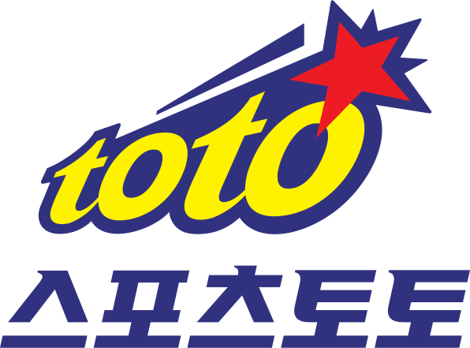

체육 복권. 체육 복표라고도 한다.
대한민국에서의 공식 명칭은 체육진흥투표권.
국민체육진흥공단
이 발행한다. 스포츠 활성화 및 국민체육진흥기금
조성을 위하여 국가 도박 사업으로 진행 중이다.
경마, 경륜을 일반 스포츠 경기로 확장한 것이라고 보면 된다.
순전히 운에 의존하는 복권과 달리, 자신의 능력 여부에 따라 게임을 분석하여 결과를 맞히면 배당금을 받는 게임이다.
국가에서 시행하는 합법적인 도박이다. 단, 배당률이 매우 짜서 22%는 토토가 먹는다.
대상 게임은 농구, 축구, 야구, 배구, 골프가 있다.
게임 방법은 승패 맞히기, 전·후반전 스코어 맞히기 등 다양하다.
경마 · 경륜과 마찬가지로 100원부터 베팅이 가능하다.
다른 복권과 마찬가지로 19세 미만(2023년 기준 2005년생 이후 출생자) 청소년의 구입과 10만원 초과 베팅이 제한되어 있다.